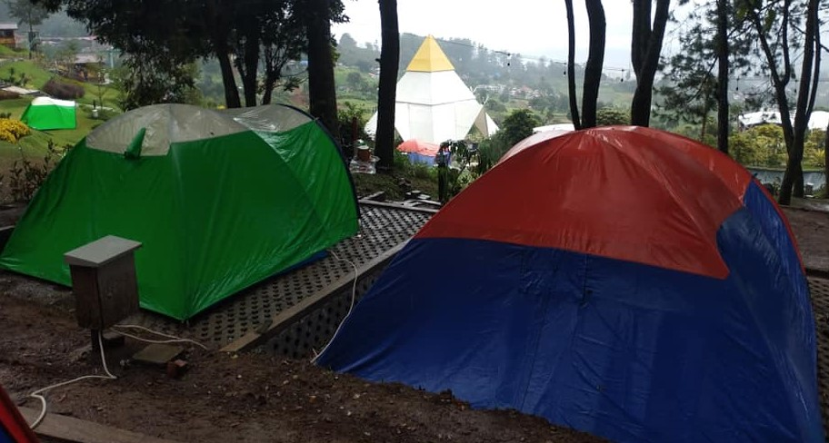
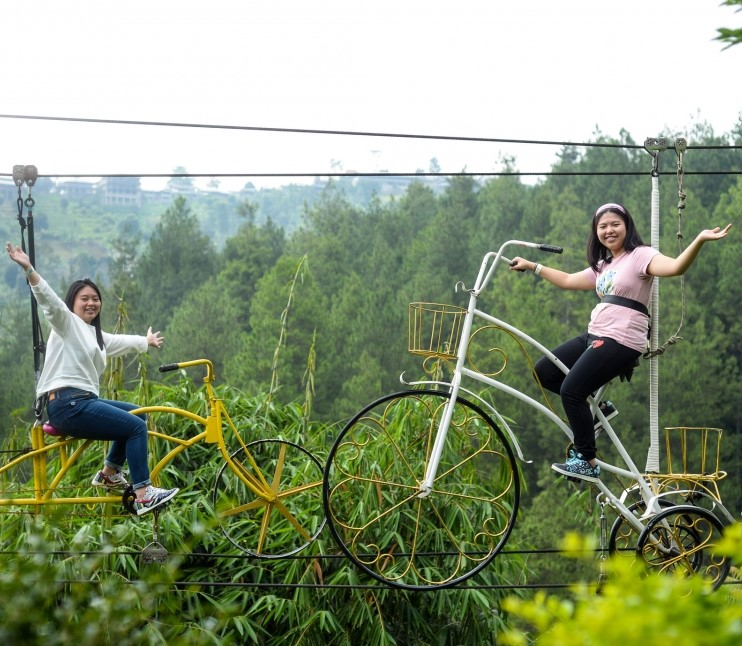
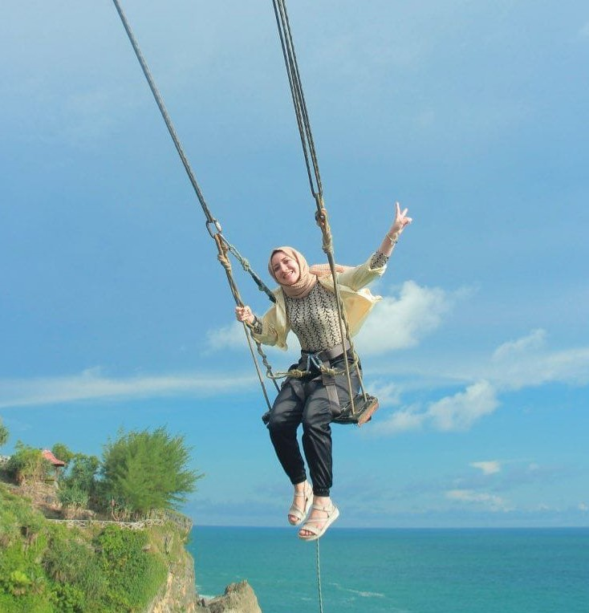
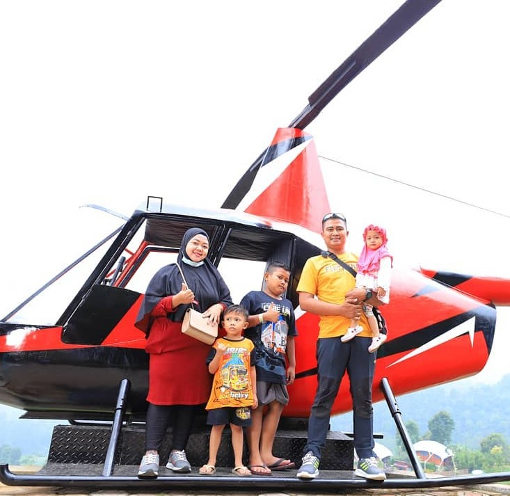
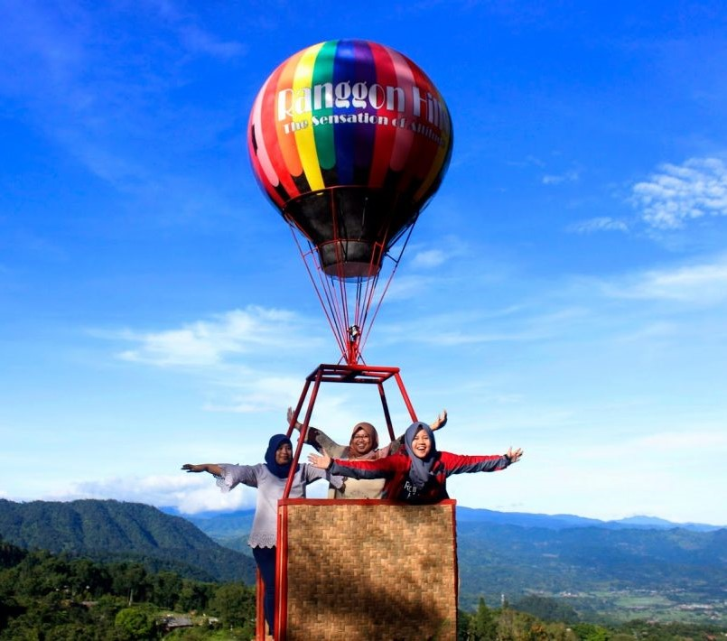
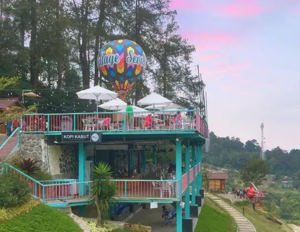
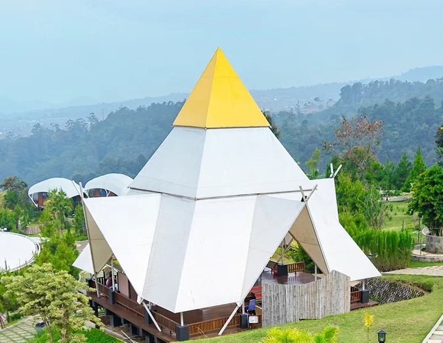

Wisata Alam Sevillage
Wisata Alam Sevillage merupakan salah satu wisata favorit keluarga di Puncak, Bogor. Adapun alamat lengkap taman wisata alam Sevillage ini adalah di Jalan Ziwa Besar, Ciloto, Kecamatan Cipanas, Kabupaten Cianjur, Jawa Barat. Setiap harinya, tempat ini memang tidak pernah sepi pengunjung, apalagi pada saat musim liburan. Keunggulannya adalah tempat ini cocok untuk liburan bersama dengan keluarga. Tidak hanya pemandangannya saja yang indah tapi wahana di sini juga cukup seru, cocok untuk anak-anak maupun dewasa.
Konsep utama dari wisata alam Sevillage adalah taman dengan wahana dan spot foto yang instagramable. Di sini kamu bisa menemui jembatan atau jalan kayu yang menghadap ke gunung. Selain itu, ada juga banyak wahana yang menawarkan keseruan. Fasilitas di sini juga tergolong cukup lengkap dan nyaman.
Berikut ini adalah aktivitas dan wahana taman wisata alam Sevillage:
Camping
Tempat ini menyediakan glamping camping dengan berbagai pilihan tenda. Kamu yang ingin menikmati alam sambil berkemah bersama dengan keluarga, bisa mencoba mendapatkan pengalaman seru di sini. Glamping Sevillage sebenarnya adalah istilah untuk sebuah tempat menginap seperti camping, namun dengan fasilitas seperti di vila atau penginapan. Dengan glamping, kamu tetap bisa nyaman beristirahat karena sudah tersedia semua fasilitasnya. Jika ingin lebih menyatu dengan alam, kamu bisa memilih camping biasa di sini. Walaupun bukan glamping tapi tenda yang ditawarkan di sini sangat nyaman. Ada 2 pilihan tenda untuk camping di sini, yaitu:
-
Tenda Keong

Tenda jenis ini berbentuk seperti rumah keong. Di dalamnya sudah tersedia matras yang empuk dan juga kantong tidur. Selain itu, di dalamnya juga sudah tersedia lemari kecil untuk menyimpan barang.
-
Tenda Dome
Alternatif lainnya adalah tenda dome, tenda ini lebih luas cocok untuk camping bersama dengan keluarga. Di dalam tenda ini juga sudah dilengkapi dengan matras yang empuk dan kantong tidur.
Wahana
-
Sky Tree

Kalau tidak ingin camping, kamu bisa menikmati wahana menarik lainnya di sini. Salah satunya adalah Sky Tree. Di wahana ini kamu bisa melihat pemandangan dari atas dan berfoto dengan latar belakang pemandangan yang indah.
-
Sky Nest dan Sky Swing

Ingin naik ayunan di ketinggian? Kamu bisa mencoba wahana Sky Nest dan Sky Swing. Keduanya hampir sama, hanya saja jenis ayunannya berbeda.
-
Sky Bike
Kamu ingin yang lebih menantang? Coba wahana Sky Bike. Wahana ini merupakan sepeda terbang, jadi kamu akan mengendarai sepeda di ketinggian di jalur yang sudah tersedia.
-
Flying Fox

Aktivitas selama di taman wisata alam Sevillage lainnya yang sangat recommended adalah Flying Fox. Kamu yang suka memacu adrenalin, harus mencoba wahana yang satu ini. Jalur flying fox di sini cukup panjang dan tinggi. Meski menegangkan, tapi pemandangannya sangat indah. Dijamin kamu akan ketagihan sekali mencoba wahana ini.
-
Adrenaline Swing
Ingin lebih memacu adrenalin? Kamu bisa mencoba wahana adrenaline swing, yaitu ayunan yang dibuat dengan sangat tinggi. Kamu yang suka aktivitas yang sedikit ekstrem, wajib mencobanya.
-
Helicopter
Ada lagi wahana menarik lainnya yaitu helicopter, yang bisa kamu naiki bersama-sama. Nantinya kamu akan diajak berputar dalam sebuah jalur di ketinggian. Dari dalam helikopter kamu bisa menikmati pemandangan Sevillage dari ketinggian yang sangat indah.
-
Balon Helium
Selain wahana helicopter, kamu yang ingin menikmati pemandangan Sevillage dari ketinggian dengan cara yang lebih aman, bisa mencoba wahana balon helium. Wahana ini merupakan wahana balon udara yang akan mengajak kamu berkeliling dari udara menikmati pemandangan Sevillage.
Restoran dan Kafe
Setelah puas bermain dan menikmati berbagai wahana, kamu bisa bersantai sambil bersantap di restoran dan kafe yang ada di sini. Restoran dan kafe di sini menyediakan berbagai menu khas Nusantara maupun menu-menu western.
Kalau tak ingin berjalan-jalan dan mengeksplorasi sekitar, kamu bisa duduk di restoran dan kafe untuk menikmati pemandangan sekitar yang tak kalah indah.
Tempat Ibadah dan Toko Oleh-Oleh
Tidak hanya wahana saja, fasilitas taman Sevillage juga cukup lengkap. Di sini terdapat tempat ibadah yang nyaman dan toko oleh-oleh. Jadi kamu bisa belanja oleh-oleh untuk dibawa pulang dari sini.